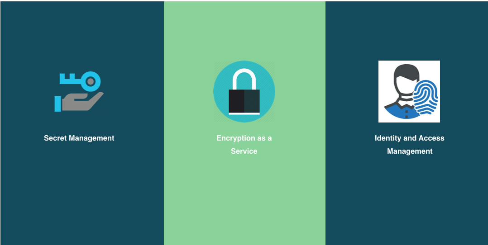

Credential Store
Mayank Patel
Application Architect @ Oildex
Oildex
Software as a Service Provider for Oil and Gas companies
- 7.5 Years
Focused on
- Streaming, Reactive, Non-blocking Architecture
- API Design
- DevOps
- Cloud Native Architecture
- Empowering software development teams
- Digital Transformation and Digital Optimization
Agenda
- Common Challenges
- Vault Use Cases & Features
- Demo
Common Challenges / Problems we are trying to solve?
Credentials stored & transmitted in Plaintext format
Credentials almost never get renewed once it is issued or manual renewal
No PKI Certificate Management
API Keys are hand generated and never renewed
No SSH Key storage
No Audit Control
No Kill Switch
Lack of automation for secrets deployment
MANY MORE...
How do we manage credentials in Cloud Native, Distributed Infrastructure ?

Vault Use Cases
Secure Credential Management on a Budget
Vault Features
- Secure Secret Storage
- Dynamic Secrets (Secret as a Service)
- Data Encryption
- Leasing and Renewal (Key Rotation)
- Revocation
- Audit Control
- Integration with wide variety of Databases and Tools
- Custom Plugin
Secure Secret Storage
- Basic Credentials
- Tokens, TOTP
- PKI Certificate Management (It’s easy to be your own certificate authority)
- LDAP
-
- SSH Keys
- Handle SSH logins across the org.
- One time SSH access
- It increases the usefulness of audit logs during incident response
- ...
Dynamic Secrets
| AWS | Cassandra | Consul | Hana |
| MariaDB | MongoDB | MSSQL | MySQL |
| Oracle | PKI Certificates | PostgreSQL | |
| RabbitMQ | SSH | Transit | Custom.. |
Why Dynamic Secrets?
Dynamic passwords provide a bunch of benefits
No need to write down, store, or share passwords
Enables very short lived passwords, less exposure if compromised
For distributed applications, every instance gets unique credentials
Constantly changing and expiring usernames/passwords are much harder to brute force
Automatic password rotation/expiration
Better audit trail
HTTP API/CLI
Integration
- consul-template
- Envconsul
- HashiCorp Vault Jenkins plugin
- Native Client Libraries
- Integration with Ansible, Chef, Puppet, Salt, etc.

Resources
Thank You!
Questions?
You can contact me at: